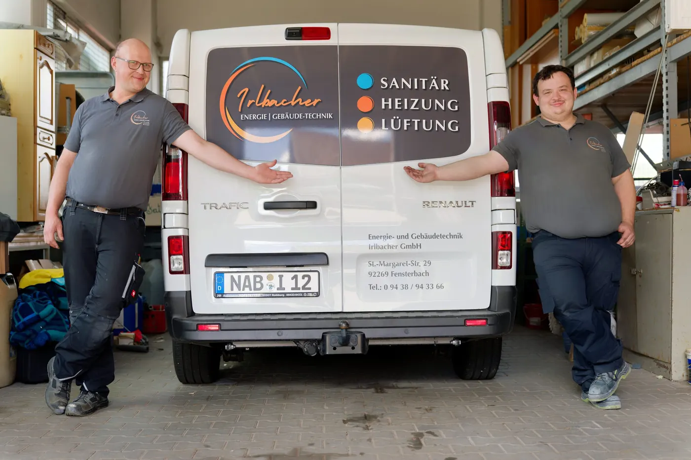
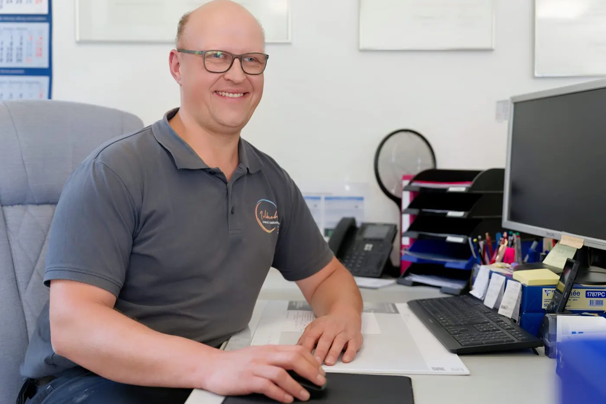
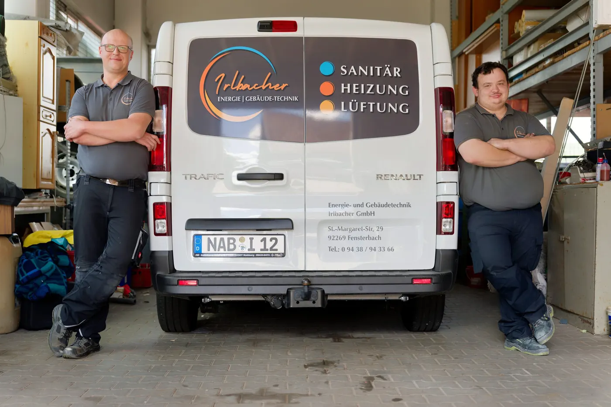

Anlagenmechaniker SHK (m/w/d) — komm ins Team.
Kleines Team, der Chef kennt dich beim Namen, Überstunden werden ausgeglichen, freitags ist um 13 Uhr Schluss. Klingt gut? Dann schau dir die Stelle an.

Sanitär, Heizung und Lüftung aus einer Hand — für Wohnhäuser und Betriebe im Landkreis Schwandorf und rund um Amberg. Meisterbetrieb, kurze Wege, der Chef selbst am Werk.
Warmes Wasser, eine Heizung, auf die man sich verlassen kann, und Luft, in der man gern zu Hause ist. Dafür sind wir da — von der Beratung bis zur Wartung.
Vom Traumbad bis zur Wasserleitung — alles, was mit Wasser im Haus zu tun hat.
Die Heizung, die zu Ihrem Haus passt — beraten, geplant, eingebaut und gewartet.
Gute Luft in jedem Raum — kontrolliert gelüftet, im Sommer angenehm gekühlt.

Wir sind ein kleiner Meisterbetrieb aus Fensterbach — Sanitär, Heizung und Lüftung für die Oberpfalz. Wer bei uns anfragt, bekommt keinen Vertriebler, sondern den, der die Anlage später auch einbaut.
Sechs Bereiche, in denen wir zu Hause sind. Klicken Sie sich durch — oder rufen Sie einfach an, wenn Sie nicht sicher sind, wo Ihr Anliegen hingehört.
Vier Schritte, die bei uns immer gleich laufen — egal ob neue Heizung, Badsanierung oder Lüftungsanlage.
Anruf, Mail oder das Formular — beschreiben Sie kurz, was ansteht. Josef Irlbacher ruft persönlich zurück, kein Callcenter dazwischen.
Schritt 1 · Anfrage
Vor Ort sehen wir, was da ist: Anlage, Leitungen, Platz, Zustand. Sie sagen, was Sie sich wünschen — wir sagen, was geht und was sinnvoll ist.
Schritt 2 · Termin vor Ort
Schriftlich, verständlich aufgeschlüsselt, ohne Kleingedrucktes. Fragen dazu klären wir am Telefon oder bei einem Kaffee.
Schritt 3 · AngebotEinbau zum vereinbarten Termin, Einweisung in die Anlage, sauber hinterlassen. Danach kümmert sich unser Kundendienst um Wartung und Störungen.
Schritt 4 · Umsetzung & Wartung
Sanitär, Heizung und Lüftung aus einer Hand — ein Ansprechpartner für das ganze Haus.
Einsatzgebiet rund um Fensterbach — Landkreis Schwandorf und der Raum Amberg.
Josef Irlbacher berät, plant und steht selbst auf der Baustelle.
Ab sieben Uhr morgens sind wir für Sie unterwegs — Montag bis Freitag.
Wir arbeiten dort, wo wir auch hinkommen, wenn's mal schnell gehen muss: im Umkreis von rund 30 Kilometern um Fensterbach. Kurze Anfahrt heißt für Sie kurze Wartezeit — und für uns, dass wir unsere Kunden kennen.
Kleines Team, der Chef kennt dich beim Namen, Überstunden werden ausgeglichen, freitags ist um 13 Uhr Schluss. Klingt gut? Dann schau dir die Stelle an.

Anruf, Mail oder Formular — Josef Irlbacher meldet sich persönlich bei Ihnen zurück.